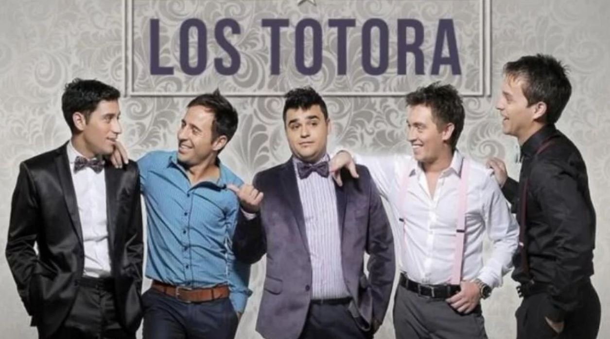

Los totora es una banda de cumbia pop, formada en la plata a fines del 2002 por varios amigos del secundario que se reunieron para hacer musica con el solo afan de divertirse y entretener
| Año | Disco | ||||
|---|---|---|---|---|---|
| 2009 | Nunca vas a dejar de Bailar | ||||
| 2011 | Encontrandonos | ||||
| 2012 | Y ahora... Vivo | ||||
| 2013 | Sin Mirar Atras | ||||
| 2015 | Cuestion de Tiempo | ||||
| 2017 | Me veras bailando... en la Luna | ||||
| 2019 | Juntos | ||||
| "Cuestion de Tiempo" es el album mas escuchado hasta el momento. | |||||